library(tidyverse)
library(cowplot)
library(broom)
library(modelr)
library(viridis)
library(lubridate)
library(hms)
library(knitr)
library(kableExtra)
knitr::opts_chunk$set(tidy.opts=list(width.cutoff=60),tidy=TRUE, echo = TRUE, message=FALSE, warning=FALSE, fig.align="center")
source("../../tools/echem_processing_tools.R")
source("../../tools/plotting_tools.R")
theme_set(theme_1())soak_1_path = "../data/soak_1/"
tran_1_path = "../data/transfer_1/"
data_cols <- c("E", "i1", "i2")
swv_skip_rows = 18
gc_skip_rows = 21# Add 'reactor' to file name so it is parsed into column
filename_cols = c("reactor", "echem", "rep")
swv_tran_1_names <- dir(path = tran_1_path, pattern = "[swv]+.+[txt]$") %>%
paste("tran1", ., sep = "_")
swv_soak_1_names <- dir(path = soak_1_path, pattern = "[swv]+.+[txt]$") %>%
paste("soak1", ., sep = "_")
# Add correct paths separate from filenames
swv_tran_1_paths <- dir(path = tran_1_path, pattern = "[swv]+.+[txt]$") %>%
paste(tran_1_path, ., sep = "")
swv_soak_1_paths <- dir(path = soak_1_path, pattern = "[swv]+.+[txt]$") %>%
paste(soak_1_path, ., sep = "")
# Combine all SWVs into single vector
swv_names <- c(swv_tran_1_names, swv_soak_1_names)
swv_paths <- c(swv_tran_1_paths, swv_soak_1_paths)
# Read in all SWVs with one function call
swv_data <- echem_import_to_df(filenames = swv_names, file_paths = swv_paths,
data_cols = data_cols, skip_rows = swv_skip_rows, filename_cols = filename_cols,
rep = T, PHZadded = F)
swv_data %>% head() %>% kable() %>% kable_styling()| reactor | echem | rep | minutes | E | electrode | current |
|---|---|---|---|---|---|---|
| tran1 | swv | 1 | 1334.583 | 0.099 | i1 | 2.1e-06 |
| tran1 | swv | 1 | 1334.583 | 0.098 | i1 | 3.1e-06 |
| tran1 | swv | 1 | 1334.583 | 0.097 | i1 | 3.1e-06 |
| tran1 | swv | 1 | 1334.583 | 0.096 | i1 | 3.1e-06 |
| tran1 | swv | 1 | 1334.583 | 0.095 | i1 | 3.1e-06 |
| tran1 | swv | 1 | 1334.583 | 0.094 | i1 | 3.1e-06 |
swv_data %>% filter(reactor == "soak1") %>% ggplot(., aes(x = E,
y = current, color = rep, group = rep)) + geom_path() + facet_wrap(~electrode,
scales = "free") + scale_color_viridis() + scale_x_reverse()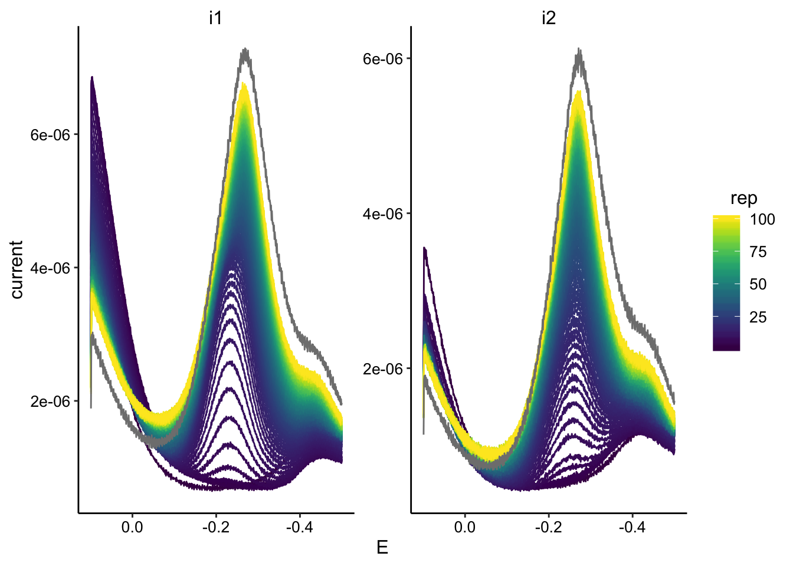
swv_data %>% filter(reactor == "tran1") %>% ggplot(., aes(x = E,
y = current, color = rep, group = rep)) + geom_path() + facet_wrap(~electrode,
scales = "free") + scale_color_viridis() + scale_x_reverse()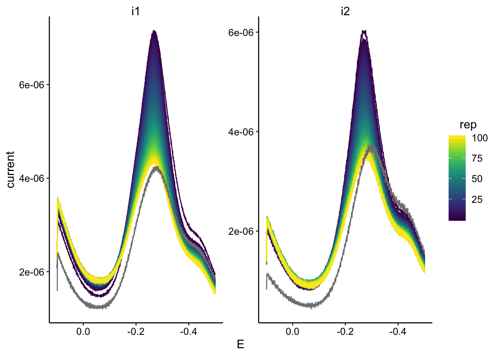
swv_max <- swv_data %>% mutate(minutes = ifelse(minutes < 1000,
minutes + 1440, minutes)) %>%
group_by(reactor) %>% mutate(min_time = min(minutes)) %>% mutate(norm_time = minutes -
min_time) %>%
group_by(reactor, rep, electrode) %>% filter(E < -0.15 & E >
-0.35) %>% mutate(max_current = max(abs(current))) %>% filter(abs(current) ==
max_current)
ggplot(swv_max, aes(x = norm_time, y = max_current, color = electrode)) +
geom_point() + facet_wrap(~reactor, scales = "free") + xlim(0,
300)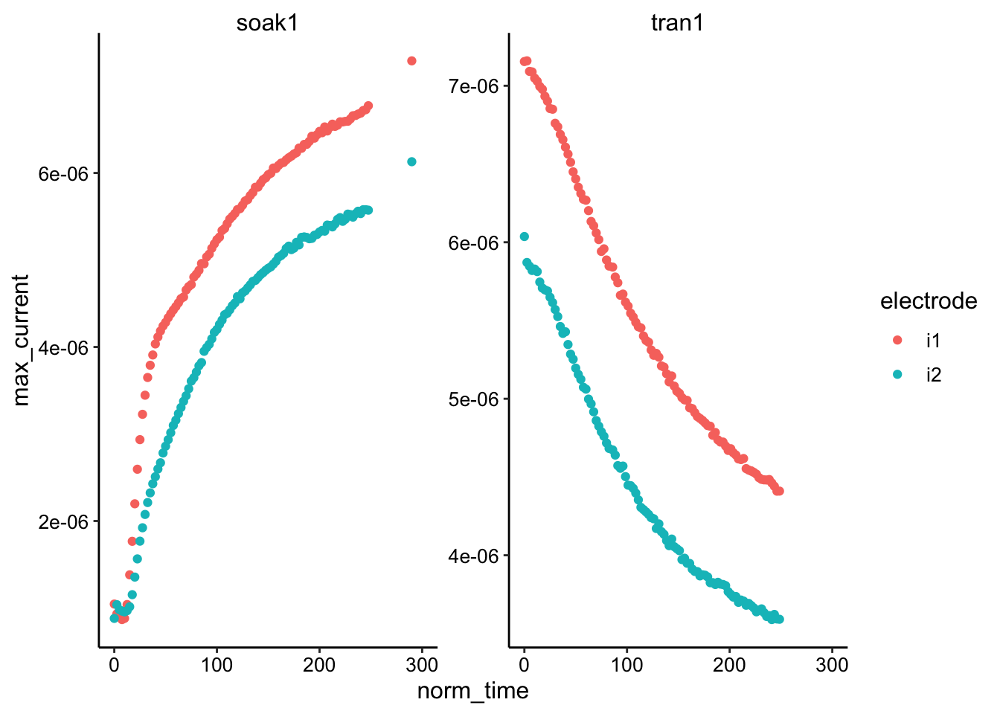
# Add 'reactor' to file name so it is parsed into column
filename_cols = c("reactor", "echem", "rep")
gc_tran_1_names <- dir(path = tran_1_path, pattern = "[gc]+.+[txt]$") %>%
paste("tran1", ., sep = "_")
gc_soak_1_names <- dir(path = soak_1_path, pattern = "[gc]+.+[txt]$") %>%
paste("soak1", ., sep = "_")
# Add correct paths separate from filenames
gc_tran_1_paths <- dir(path = tran_1_path, pattern = "[gc]+.+[txt]$") %>%
paste(tran_1_path, ., sep = "")
gc_soak_1_paths <- dir(path = soak_1_path, pattern = "[gc]+.+[txt]$") %>%
paste(soak_1_path, ., sep = "")
# Combine all SWVs into single vector
gc_names <- c(gc_tran_1_names, gc_soak_1_names)
gc_paths <- c(gc_tran_1_paths, gc_soak_1_paths)
# Read in all SWVs with one function call
gc_data <- echem_import_to_df(filenames = gc_names, file_paths = gc_paths,
data_cols = data_cols, skip_rows = gc_skip_rows, filename_cols = filename_cols,
rep = T, PHZadded = F)
gc_data %>% head() %>% kable(digits = 9) %>% kable_styling()| reactor | echem | rep | minutes | E | electrode | current |
|---|---|---|---|---|---|---|
| tran1 | gc | 1 | 1336.9 | 0.000 | i1 | -4.1e-08 |
| tran1 | gc | 1 | 1336.9 | -0.001 | i1 | -3.5e-08 |
| tran1 | gc | 1 | 1336.9 | -0.002 | i1 | -3.3e-08 |
| tran1 | gc | 1 | 1336.9 | -0.003 | i1 | -2.8e-08 |
| tran1 | gc | 1 | 1336.9 | -0.004 | i1 | -2.7e-08 |
| tran1 | gc | 1 | 1336.9 | -0.005 | i1 | -2.3e-08 |
gc_data %>% filter(reactor == "soak1") %>% ggplot(., aes(x = E,
y = current, color = rep, group = rep)) + geom_path() + facet_wrap(~electrode,
scales = "free") + scale_color_viridis() + scale_x_reverse()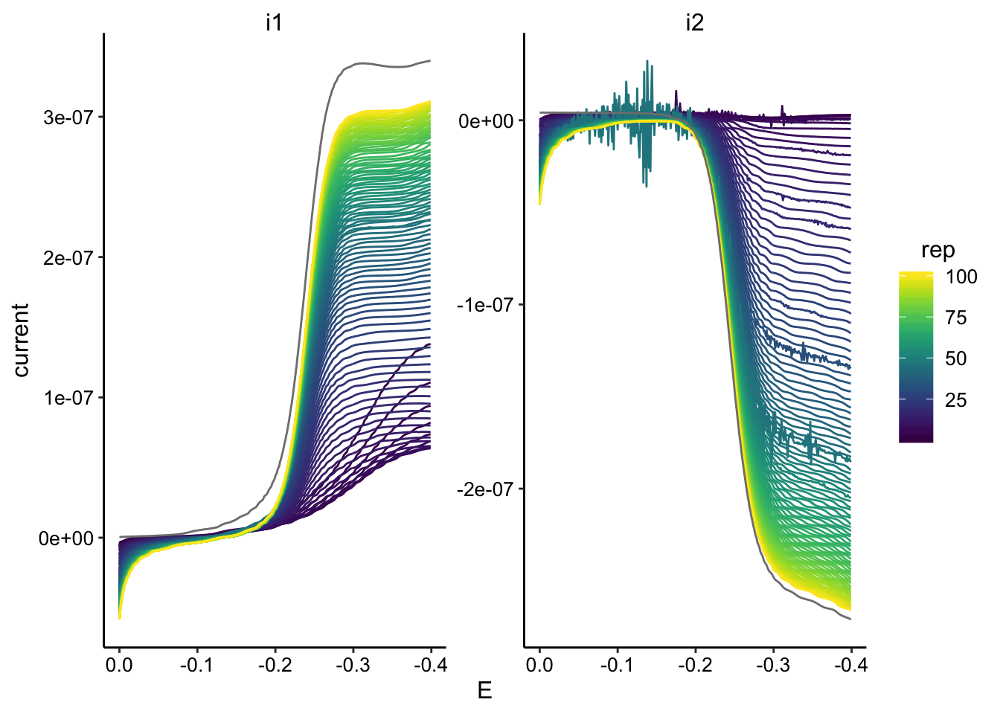
gc_data %>% filter(reactor == "tran1") %>% ggplot(., aes(x = E,
y = current, color = rep, group = rep)) + geom_path() + facet_wrap(~electrode,
scales = "free") + scale_color_viridis() + scale_x_reverse()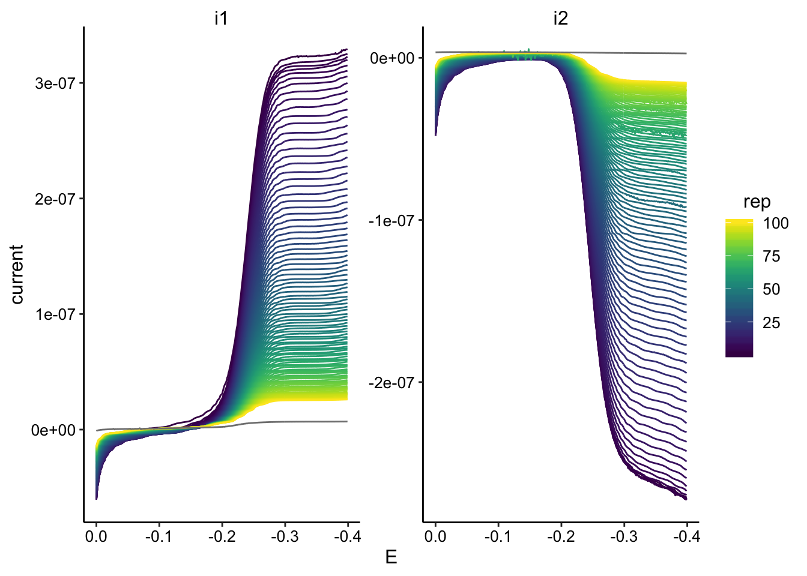
gc_max <- gc_data %>% mutate(minutes = ifelse(minutes < 1000,
minutes + 1440, minutes)) %>%
group_by(reactor) %>% mutate(min_time = min(minutes)) %>% mutate(norm_time = minutes -
min_time) %>%
group_by(reactor, rep, electrode) %>% filter(E < -0.2) %>% mutate(max_current = max(abs(current))) %>%
filter(abs(current) == max_current)
ggplot(gc_max, aes(x = norm_time, y = max_current, color = electrode)) +
geom_point() + facet_wrap(~reactor, scales = "free") + xlim(0,
300)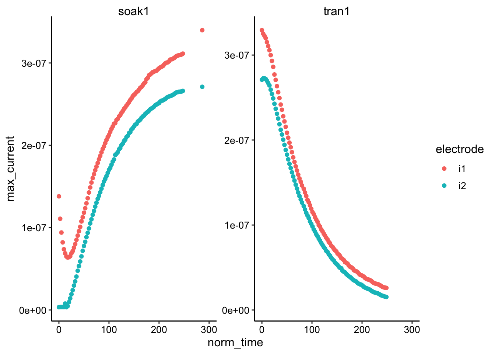
swv_gc_max <- left_join(swv_max %>% ungroup() %>% mutate(rep = rep -
1), gc_max, by = c("reactor", "rep"), suffix = c("_swv",
"_gc"))
ggplot(swv_gc_max, aes(x = max_current_swv, y = max_current_gc,
color = electrode_gc)) + geom_point() + geom_smooth(data = swv_gc_max %>%
filter(max_current_swv > 5e-06), method = "lm", fullrange = T) +
facet_wrap(c("reactor", "electrode_swv"), scales = "free")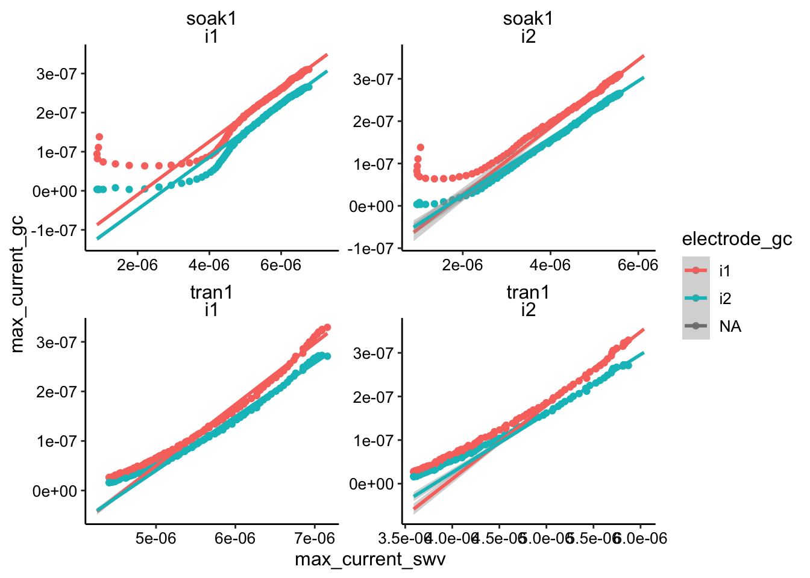
ggplot(swv_gc_max %>% filter(electrode_gc == "i2"), aes(x = max_current_swv,
y = max_current_gc, color = reactor, shape = electrode_swv)) +
geom_point()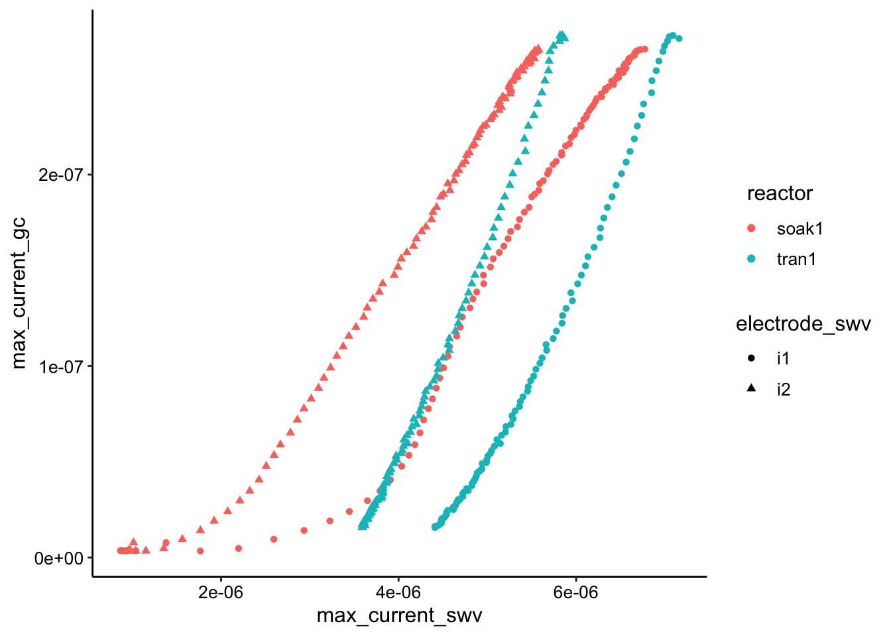
ggplot(swv_gc_max %>% filter(electrode_gc == "i2" & reactor ==
"soak1"), aes(x = max_current_swv, y = max_current_gc, color = reactor,
shape = electrode_swv)) + geom_point() + geom_smooth(data = swv_gc_max %>%
filter(electrode_gc == "i2" & reactor == "soak1" & rep >
30), method = "lm", fullrange = T)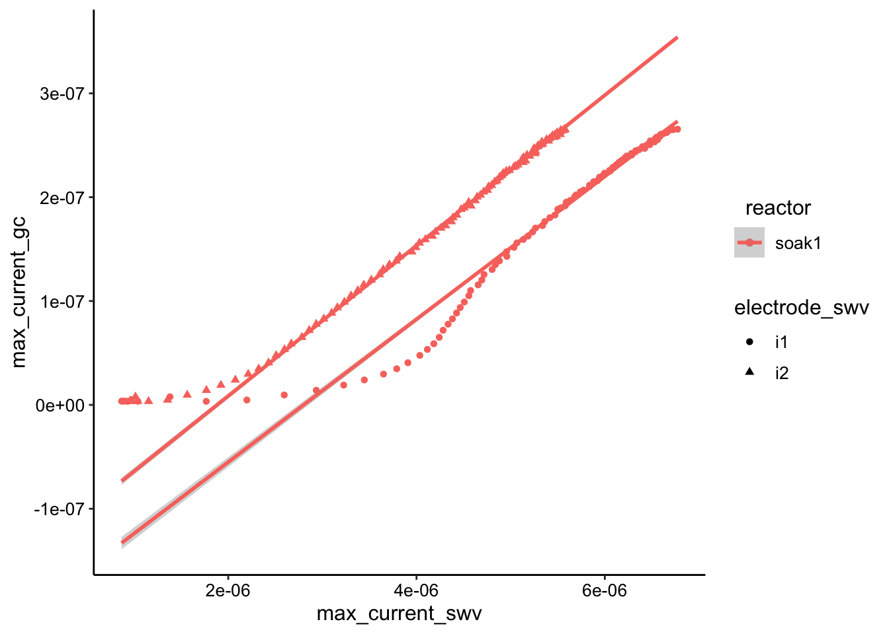
ggplot(swv_gc_max %>% filter(electrode_gc == "i2" & reactor ==
"tran1"), aes(x = max_current_swv, y = max_current_gc, color = reactor,
shape = electrode_swv)) + geom_point() + geom_smooth(data = swv_gc_max %>%
filter(electrode_gc == "i2" & reactor == "tran1" & rep <
50), method = "lm", fullrange = T)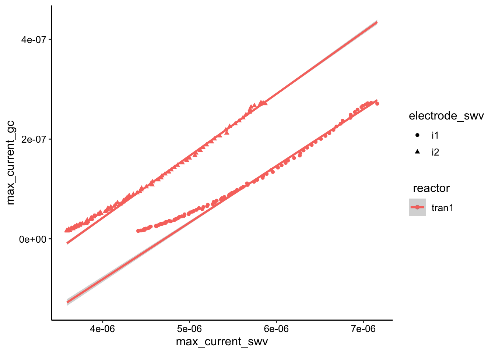
dap_from_swvGC <- function(m, t_p = 1/(2 * 300)) {
psi <- 0.7
# psi <- 0.75 A <- 0.013 #cm^2
A <- 0.025 #cm^2
S <- 18.4 #cm
d_ap <- (m * A * psi)^2/(S^2 * pi * t_p)
d_ap
}lms <- swv_gc_max %>% filter(rep > 0 & max_current_swv > 5e-06) %>%
group_by(reactor, electrode_swv, electrode_gc) %>% do(tidy(lm(max_current_gc ~
max_current_swv, data = .), conf.int = T)) %>% filter(term ==
"max_current_swv") %>% mutate(dap = dap_from_swvGC(m = estimate)) %>%
mutate(dap_high = dap_from_swvGC(m = conf.high)) %>% mutate(dap_low = dap_from_swvGC(m = conf.low)) %>%
mutate(dataset = "SWVvsGC")
lms %>% kable() %>% kable_styling()| reactor | electrode_swv | electrode_gc | term | estimate | std.error | statistic | p.value | conf.low | conf.high | dap | dap_high | dap_low | dataset |
|---|---|---|---|---|---|---|---|---|---|---|---|---|---|
| soak1 | i1 | i1 | max_current_swv | 0.0679339 | 0.0003857 | 176.11233 | 0 | 0.0671629 | 0.0687050 | 8.0e-07 | 8.0e-07 | 8.0e-07 | SWVvsGC |
| soak1 | i1 | i2 | max_current_swv | 0.0669625 | 0.0005771 | 116.02347 | 0 | 0.0658088 | 0.0681162 | 8.0e-07 | 8.0e-07 | 7.0e-07 | SWVvsGC |
| soak1 | i2 | i1 | max_current_swv | 0.0795563 | 0.0023490 | 33.86869 | 0 | 0.0747826 | 0.0843300 | 1.1e-06 | 1.2e-06 | 1.0e-06 | SWVvsGC |
| soak1 | i2 | i2 | max_current_swv | 0.0675213 | 0.0018069 | 37.36832 | 0 | 0.0638493 | 0.0711934 | 8.0e-07 | 9.0e-07 | 7.0e-07 | SWVvsGC |
| tran1 | i1 | i1 | max_current_swv | 0.1237482 | 0.0017951 | 68.93727 | 0 | 0.1201563 | 0.1273402 | 2.6e-06 | 2.8e-06 | 2.5e-06 | SWVvsGC |
| tran1 | i1 | i2 | max_current_swv | 0.1085590 | 0.0012016 | 90.34606 | 0 | 0.1061546 | 0.1109634 | 2.0e-06 | 2.1e-06 | 1.9e-06 | SWVvsGC |
| tran1 | i2 | i1 | max_current_swv | 0.1687697 | 0.0032219 | 52.38178 | 0 | 0.1620878 | 0.1754515 | 4.9e-06 | 5.3e-06 | 4.5e-06 | SWVvsGC |
| tran1 | i2 | i2 | max_current_swv | 0.1351031 | 0.0025761 | 52.44495 | 0 | 0.1297606 | 0.1404456 | 3.2e-06 | 3.4e-06 | 2.9e-06 | SWVvsGC |
ggplot(lms, aes(x = reactor, y = dap, color = electrode_swv,
shape = electrode_gc)) + geom_pointrange(aes(ymin = dap_low,
ymax = dap_high))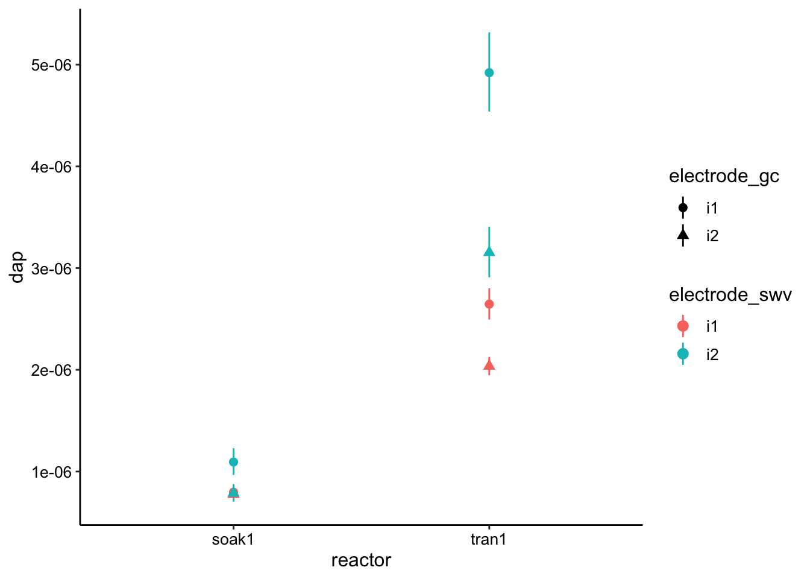
lm_soak <- swv_gc_max %>% filter(reactor == "soak1") %>% filter(rep >
0 & rep > 30) %>% group_by(reactor, electrode_swv, electrode_gc) %>%
do(tidy(lm(max_current_gc ~ max_current_swv, data = .), conf.int = T)) %>%
filter(term == "max_current_swv") %>% mutate(dap = dap_from_swvGC(m = estimate)) %>%
mutate(dap_high = dap_from_swvGC(m = conf.high)) %>% mutate(dap_low = dap_from_swvGC(m = conf.low)) %>%
mutate(dataset = "SWVvsGC")
lm_tran <- swv_gc_max %>% filter(reactor == "tran1") %>% filter(rep >
0 & max_current_swv < 50) %>% group_by(reactor, electrode_swv,
electrode_gc) %>% do(tidy(lm(max_current_gc ~ max_current_swv,
data = .), conf.int = T)) %>% filter(term == "max_current_swv") %>%
mutate(dap = dap_from_swvGC(m = estimate)) %>% mutate(dap_high = dap_from_swvGC(m = conf.high)) %>%
mutate(dap_low = dap_from_swvGC(m = conf.low)) %>% mutate(dataset = "SWVvsGC")
bind_rows(lm_soak, lm_tran) %>% ggplot(., aes(x = reactor, y = dap,
color = electrode_swv, shape = electrode_gc)) + geom_hline(yintercept = 7e-06,
linetype = 2) + geom_pointrange(aes(ymin = dap_low, ymax = dap_high),
position = position_jitter(width = 0.1, height = 0)) + ylim(0,
NA)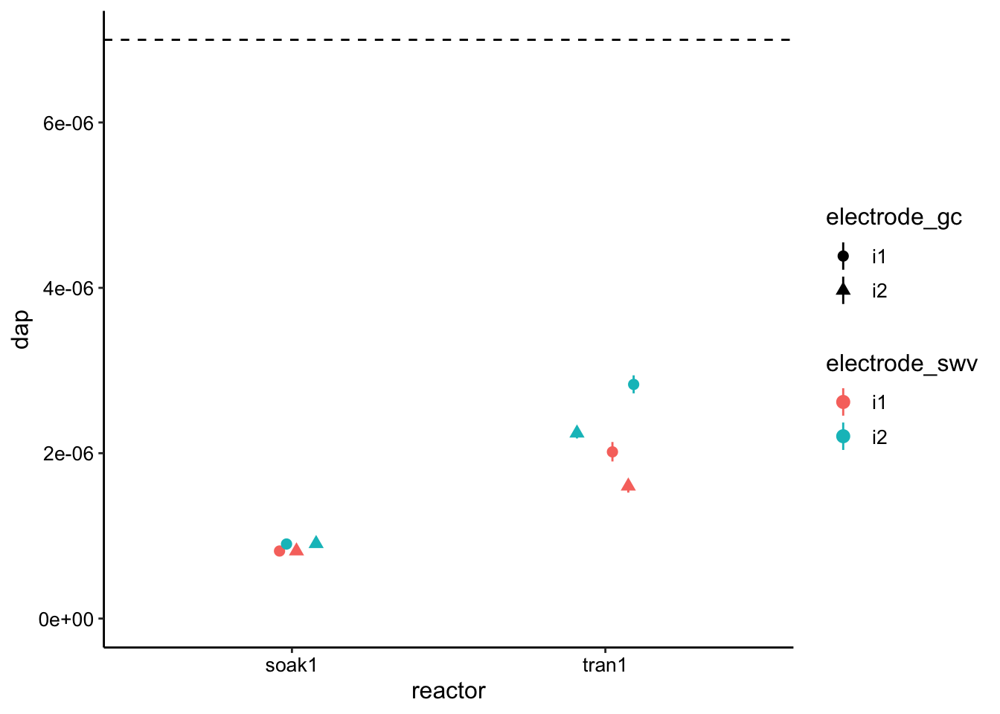